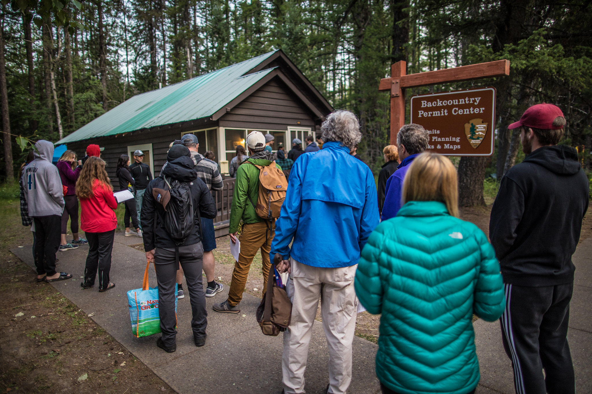

Permitting Rules and Regulations
Permitting Basics
- May 1st- October 31st $7 per night per person fee due at backcountry permit office (no discounts)
- Winter backcountry permits (Nov 1st-April 30) are free
- Permit is required for any overnight camping and must be in your possession while in the backcountry
- Permits are valid only for specified dates, location, and party size
- Max party size is 12 people
- Each backcountry campground has 2-7 campsites
- Each campsite is limited to 4 people and 2 tents
- Trip itineraries must be contiguous, you cannot drive to another trailhead and access other campgrounds (need separate trip itinerary and permitting for each)
- Hiking short road sections on foot to connect longer itineraries is permitted
-
There are 6 permit locations:
- Apgar Backcountry Permit Center
- St. Mary Visitor Center
- Many Glacier Ranger Station
- Two Medicine Ranger Station
- Polebridge Ranger Station
- Waterton Lakes National Park Visitor Reception Centre
Types of Permits
Advanced Permit
- About half of each campsite is reservable in advance
- Advance registrations can only be submitted online
- Available starting March 15th for groups of 1-8 campers
- Available starting March 1st for groups of 9-12 campers
- $10 Administration fee and $30 Fulfilled Trip Request Fee
- $7 fee will be due when picking up permit at the park

Walk in Permit
- Arrive early before your intended trip start date
- Only fee is the $7 per night
- Can not line up until 4:00am, and will not be issued after 4:30pm at any location
Permitting Tips
- Have multiple plans for different trips in different sections of Glacier, so you can be ready if you don't get your first choice
- Weekends are more popular, so you have a better chance of getting your choice on a weekday
- Rangers often post the current campsite availability outside the station when they close (this may no longer be accurate by morning but it can still help)
- Have an idea of what mileage and elevation gain your group can handle (keeping weather in mind), which will help if you need to adjust a plan
- Get up early and wait at the station for a better chance (earliest is 4:00 am)
- West Glacier Permit Station opens an hour earlier than the others, so high demand sites may get taken during that first hour